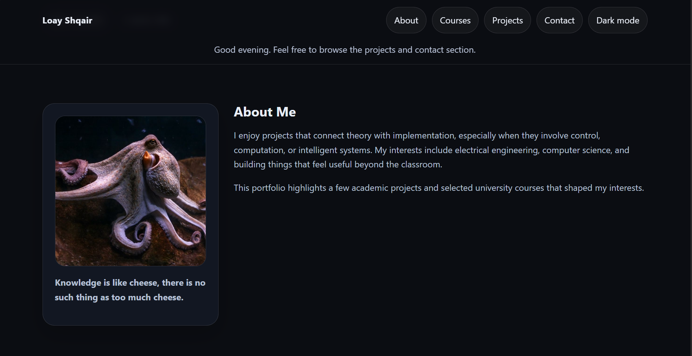
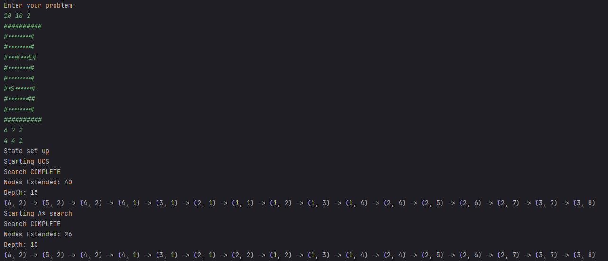
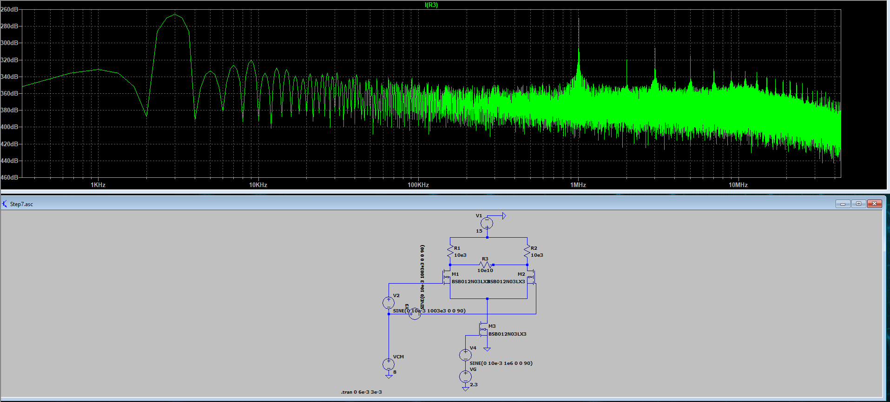

WebPortfolio Website
Responsive personal portfolio with theme persistence, live filtering, API integration, and improved UX feedback.
Electrical Engineering + Computer Science
I am Loay Shqair. My interests sit at the intersection of software, embedded systems, signal-oriented thinking, and practical engineering problem solving.

I enjoy projects that combine theory with implementation. I am especially drawn to work that feels both technical and tangible, whether that means designing logic, analyzing systems, or building software that exposes engineering ideas clearly.
This version of the site emphasizes advanced front-end behavior instead of only static presentation.
Coursework that shaped the technical direction of this portfolio.
| Course | Area | Main practice |
|---|---|---|
| Signals and Systems | Electrical Engineering | Transforms, system behavior, and analysis of continuous/discrete signals |
| Data Structures and Algorithms | Computer Science | Efficiency, recursion, graph search, and algorithm design |
| Computer Organization | Hardware / Systems | Instruction execution, processor organization, and low-level thinking |
| Object-Oriented Programming | Software Development | Abstraction, modularity, and maintainable Java-based design |
Adaptive content
Choose a preference and the page will recommend which projects to inspect first.
Complex logic
Filter by category, sort by year, and search by title, description, tags, or technology.

WebResponsive personal portfolio with theme persistence, live filtering, API integration, and improved UX feedback.
 Systems
Systems
Implemented a processor from an instruction set, including both single-cycle and pipelined versions.

Java program that modeled the environment as states and searched for the safest path to a target.

ElectronicsDesigned a downconversion circuit using LTspice for simulation and to optimize circuit performance
No projects match the current search, filter, and difficulty settings.
API integration
This section fetches public repositories from the GitHub API so the portfolio can display live project data.
Status: Loading repositories...
Validated interaction
This form demonstrates client-side validation with multiple checks before accepting a submission.